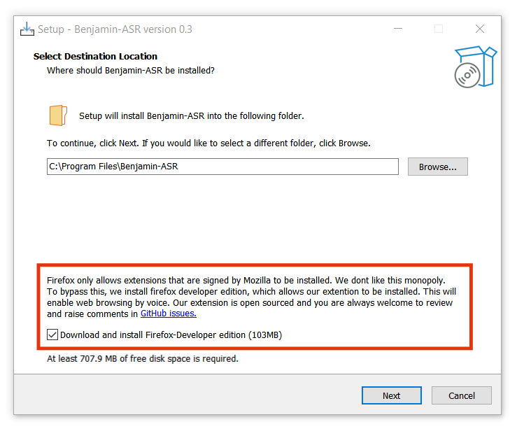

Windows
1-Click Setup: Benjamin-ASR.exe
Info
During setup we automatically install a Firefox extension that facilitates web browsing through voice. We do not collect any data through this but you are always welcome to disable this by unchecking following box during the installation.

Linux
For Linux there is no 1-click official setup, but you should be able to get it up and running following setups
-
Install Awesome-WM and Polybar and Firefox Developer Edition
-
Install extension
- Download Benjfox.xpi extension
- Open Firefox, press
Ctrl+Shift+Ato open Add-on page. - Click on the settings icon and select
Install Add-on From File. - Select xpi file and install.
-
Install config files from Bijoux repository for PolyBar and Awesome-WM.
-
Install Benjamin-ASR.sh